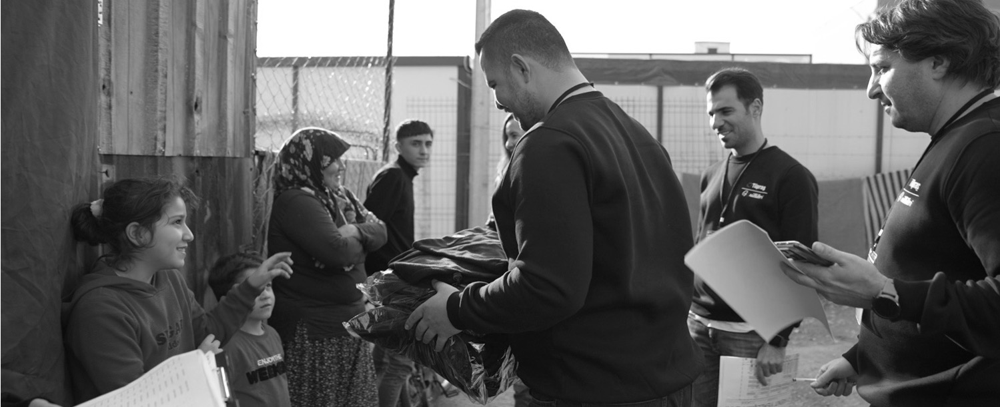

Mesleki
- PLT (Vision, Up, Future)
- Lead · LiderSensin
- Yetenek Gelişimi
- RAYEP
- Teknik Gelişim Kataloğu
- Yetkinlik Gelişim Kataloğu
- Koç Akademi
- Çevik Dönüşüm
- Ünvan Tasarımı
- BiOmuzVer
Türkiye'nin en büyük sanayi şirketi Tüpraş; kariyer fırsatlarından gelişim olanaklarına, esnek yan faydalardan sosyal yaşama kadar insan odaklı, çevik ve dijital bir çalışan deneyimi sunar.
İstanbul'daki Genel Müdürlüğümüz; İzmit, İzmir, Kırıkkale ve Batman'daki Rafinerilerimiz ile Londra Trading ofislerimizde çalışma arkadaşlarımıza bütüncül bir deneyim sunuyoruz.
İnsan odaklı, çevik ve dijital bir çalışan deneyimi.

Türkiye'nin en büyük sanayi şirketi Tüpraş; kariyer fırsatlarından gelişim olanaklarına, esnek yan faydalardan sosyal yaşama kadar insan odaklı, çevik ve dijital bir çalışan deneyimi sunar.
İstanbul Genel Müdürlüğümüz; İzmit, İzmir, Kırıkkale ve Batman Rafinerileri ile Londra Trading ofislerindeki açık pozisyonları Koç Kariyerim ve LinkedIn İlanlar sayfalarından inceleyebilirsin.
Koç Kariyerim ve LinkedIn İlanlar sayfalarından inceleyebilirsin.
Başvur →
Koç Topluluğu Fark Yaratan İş Yerleri Ödülleri alan Tüpraş Kampüslerinde; sosyal tesisler, spor salonları, lojmanlar, kafeler ve mola alanları çalışma arkadaşlarımıza birlikte vakit geçirme, sosyalleşme ve dinlenme imkânı sunar.

Tüpraş Nextremers yalnızca bir yetenek programı değil; geleceğin Tüpraşlılarına özel, gençlerle birlikte tasarlanmış bütüncül bir iş deneyimidir. 3–4. sınıf öğrencileri, yüksek lisans öğrencileri ve yeni mezun genç yetenekler için gerçek projeler, uluslararası eğitimler ve topluluklar.
Nextremers Programı →Spor takımlarından gönüllülüğe, sosyal etkinlik kulüplerinden kültürel gezilere; çalışma arkadaşlarımız ve aileleri için zengin bir sosyal yaşam.

Tüpraş Sosyal Etkinlik Kulüpleri; tiyatrodan dansa, müzikten kültürel gezilere, satrançtan doğada aktivitelere kadar etkinliklerle çalışma arkadaşlarımıza ve ailelerine bir araya gelme fırsatı sunar.
20'den fazla branşta yıl boyunca antrenmanlara ve turnuvalara katılır, Koç Topluluğu Spor Şenliklerinde Tüpraş'ı temsil eder.

Tüpraş ve Koç Gönüllüleri ihtiyaç olan her yerde birlikte hareket ederek dayanışmayı güçlendirecek gönüllülük programları sunar.
Tüpraş Akademi ve Koç Akademi ile teknik, davranışsal ve liderlik gelişimine yönelik global bir ekosistem. Koç Topluluğu şirketleri genelinde gelişim, kariyer hareketliliği, rotasyon ve takdir olanakları.
Birlikte kodluyoruz.
Kapsamlı liderlik ve yetenek gelişimi programı.
Uzman iç ve dış eğitmenlerden bireysel destek.
Koç Topluluğu genelinde kariyer hareketliliği ve rotasyon.
Açık pozisyonları incele, Tüpraş Yaşam'ın bir parçası ol.